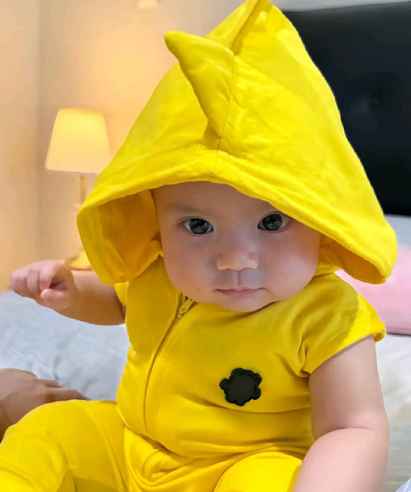

Dalam dunia hiburan, kartun selalu menjadi tontonan favorit berbagai kalangan. Baik anak-anak maupun orang dewasa, banyak yang menyukai karakter unik, cerita sederhana, dan humor ringan yang ditampilkan. Salah satu karakter yang cukup menarik perhatian adalah Nailong Kuning, sebuah tokoh kartun dengan penampilan sederhana namun penuh pesona.
 Nailong Kuning adalah karakter kartun berwarna kuning cerah yang memiliki bentuk sederhana, wajah ekspresif, dan sifat menggemaskan. Warna kuning dipilih karena melambangkan keceriaan, semangat, dan energi positif, sehingga karakter ini mudah dikenali serta memberi kesan cerah bagi penontonnya. Nailong juga memiliki kemiripan dengan salah satu bayi loh yaitu ELZARD.